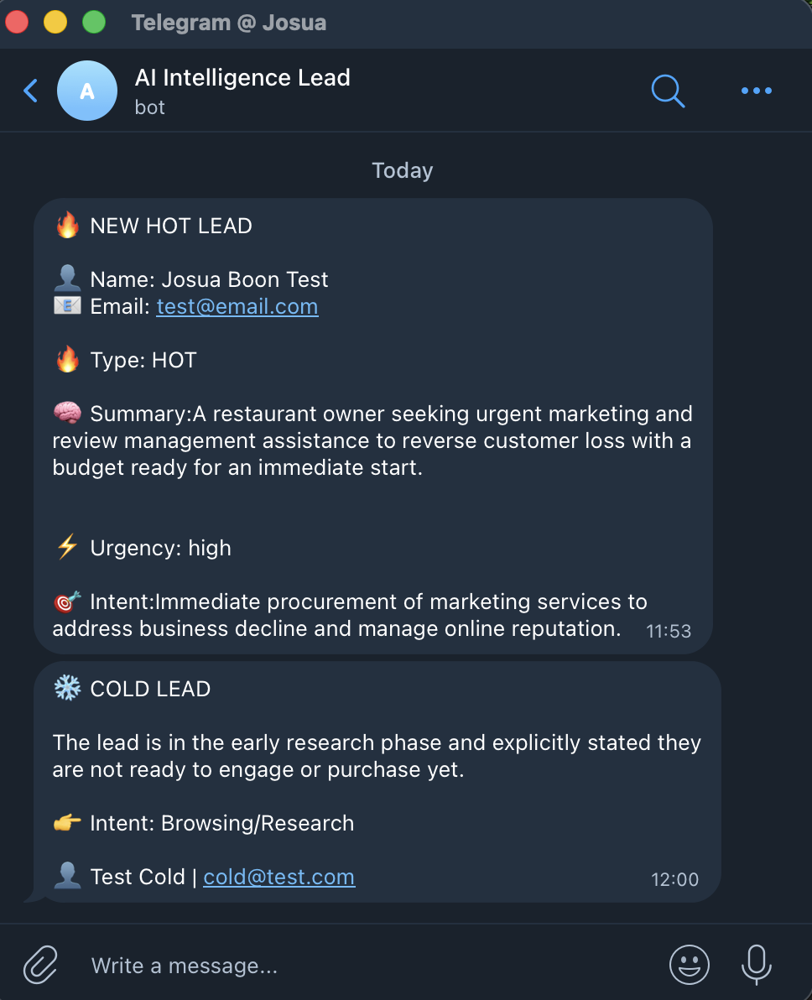

AUTOMATION
🔄 Make.com Scenario
A modular Make.com scenario focused on classification and routing logic.
This system is typically used as a building block inside larger automation pipelines.

Lightweight AI engine that analyzes and categorizes incoming leads designed as the core logic behind automated lead systems.
This system acts as the decision-making layer for incoming leads.
Instead of manually reviewing messages, AI evaluates each lead and assigns a priority level based on intent and urgency.
It doesn’t handle full automation flows, but focuses on one thing: accurate, real-time lead qualification that can be plugged into any system.
A modular Make.com scenario focused on classification and routing logic.
This system is typically used as a building block inside larger automation pipelines.
Can be connected to messaging platforms like Telegram to deliver classified leads instantly.
Acts as the signal layer — not the full execution system.

I build modular AI components like this that integrate into larger automation systems.
Build this for me